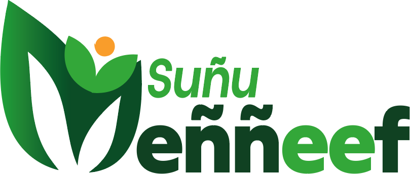

<title>Charte Suñu Meññeef</title>
<meta name="claude:viewport-fit-sides" content="cover">
<meta name="description" content="Charte graphique de la marque Suñu Meññeef : logo, couleurs, typographie, usages et applications.">
<link rel="preconnect" href="https://fonts.googleapis.com">
<link rel="preconnect" href="https://fonts.gstatic.com" crossorigin>
<link rel="stylesheet" href="https://fonts.googleapis.com/css2?family=Archivo:ital,wght@0,400;0,600;0,800;0,900;1,800;1,900&family=Source+Sans+3:wght@400;600&family=JetBrains+Mono:wght@500&display=swap">
<style>
/* Layout : colonne éditoriale unique, chaque chapitre = bandeau numéroté (l'ordre suit la logique d'une charte : identité → règles → applications) */
:root{
  /* Couleurs de marque — fixes, identiques dans les deux thèmes */
  --c-feuille:#33A739;
  --c-foret:#104122;
  --c-profond:#0B4D26;
  --c-soleil:#F99D2B;
  --c-sable:#F4F6EF;
  --c-encre:#0E1F14;
  /* Tokens d'interface */
  --bg:#F4F6EF;
  --surface:#FFFFFF;
  --fg:#0E1F14;
  --muted:#4C5E50;
  --line:#D5DDCF;
  --accent:#1D7E33;
  --tag-bg:#E4EEDD;
  /* Typo */
  --f-display:"Archivo","Arial Black","Helvetica Neue",Arial,sans-serif;
  --f-body:"Source Sans 3","Segoe UI",Roboto,Helvetica,Arial,sans-serif;
  --f-mono:"JetBrains Mono",ui-monospace,Menlo,Consolas,monospace;
  --maxw:1120px;
}
@media (prefers-color-scheme:dark){:root:not([data-theme="light"]){
  --bg:#0A1A10;--surface:#10261A;--fg:#E9F0E4;--muted:#A3B5A6;--line:#244232;--accent:#5CC764;--tag-bg:#183524;color-scheme:dark}}
:root[data-theme="dark"]{--bg:#0A1A10;--surface:#10261A;--fg:#E9F0E4;--muted:#A3B5A6;--line:#244232;--accent:#5CC764;--tag-bg:#183524;color-scheme:dark}

*{box-sizing:border-box}
body{background:var(--bg);color:var(--fg);font-family:var(--f-body);font-size:17px;line-height:1.6;margin:0}
.wrap{max-width:var(--maxw);margin:0 auto;padding-left:max(16px,env(safe-area-inset-left,0px));padding-right:max(16px,env(safe-area-inset-right,0px))}
h1,h2,h3{font-family:var(--f-display);line-height:1.08;text-wrap:balance;margin:0}
h2{font-size:clamp(30px,5vw,48px);font-weight:900;letter-spacing:-.01em}
h3{font-size:20px;font-weight:800}
p{margin:0;max-width:65ch}
.lede{font-size:19px;color:var(--muted)}
.eyebrow{font-family:var(--f-display);font-weight:800;font-size:12px;letter-spacing:.14em;text-transform:uppercase;color:var(--accent)}
.mono{font-family:var(--f-mono);font-size:13px;font-variant-numeric:tabular-nums}
img{max-width:100%;display:block}
a{color:var(--accent)}
:focus-visible{outline:3px solid var(--c-soleil);outline-offset:2px}

/* Couverture */
.cover{background:var(--c-foret);color:#fff;position:relative;overflow:hidden}
.cover .wrap{padding-block:56px 64px;display:grid;grid-template-columns:1.1fr 1fr;gap:40px;align-items:center}
.cover .leafbg{position:absolute;right:-120px;top:-80px;width:460px;height:460px;border-radius:0 100% 0 100%;background:var(--c-profond);transform:rotate(12deg)}
.cover .leafbg.two{right:120px;top:auto;bottom:-260px;width:340px;height:340px;background:#145a2c;transform:rotate(-30deg)}
.cover .sun{position:absolute;right:56px;top:48px;width:34px;height:34px;border-radius:50%;background:var(--c-soleil)}
.cover-logo{position:relative;z-index:1}
.cover-logo img{width:100%;max-width:440px}
.cover-txt{position:relative;z-index:1;display:grid;gap:18px}
.cover h1{font-size:clamp(40px,7vw,76px);font-weight:900;letter-spacing:-.02em}
.cover h1 em{font-style:italic;color:var(--c-feuille)}
.cover p{color:#CFE3D2}
.cover .meta{display:flex;flex-wrap:wrap;gap:8px 20px;font-family:var(--f-mono);font-size:12px;color:#A9C9AF;letter-spacing:.04em}

/* Sommaire */
.toc{border-bottom:1px solid var(--line);background:var(--surface)}
.toc ol{list-style:none;margin:0;padding:18px 0;display:flex;flex-wrap:wrap;gap:6px 22px;counter-reset:t}
.toc li{counter-increment:t;font-family:var(--f-display);font-weight:600;font-size:14px}
.toc li::before{content:counter(t,decimal-leading-zero);color:var(--accent);margin-right:6px;font-family:var(--f-mono);font-size:12px}
.toc a{color:var(--fg);text-decoration:none}
.toc a:hover{color:var(--accent)}

/* Chapitres */
section.ch{padding-block:72px;border-bottom:1px solid var(--line)}
.ch-head{display:grid;grid-template-columns:90px 1fr;gap:12px 24px;margin-bottom:40px}
.ch-num{font-family:var(--f-display);font-weight:900;font-size:56px;line-height:.9;color:var(--c-feuille)}
.ch-head > div{display:grid;gap:12px;min-width:0}
.grid{display:grid;gap:20px}
.g2{grid-template-columns:repeat(2,minmax(0,1fr))}
.g3{grid-template-columns:repeat(3,minmax(0,1fr))}
.g4{grid-template-columns:repeat(4,minmax(0,1fr))}
.card{background:var(--surface);border:1px solid var(--line);border-radius:10px;padding:22px;display:grid;gap:10px;align-content:start;min-width:0}
.note{font-size:15px;color:var(--muted)}
.tag{display:inline-block;background:var(--tag-bg);color:var(--fg);border-radius:4px;padding:1px 8px;font-size:13px;font-weight:600}

/* Anatomie */
.anat{display:grid;grid-template-columns:minmax(0,1.3fr) minmax(0,1fr);gap:32px;align-items:center}
.anat-fig{position:relative;background:#fff;border:1px solid var(--line);border-radius:10px;padding:28px}
.pin{position:absolute;width:26px;height:26px;border-radius:50%;background:var(--c-encre);color:#fff;font:800 13px/26px var(--f-display);text-align:center;box-shadow:0 0 0 3px #fff}
.anat ol{margin:0;padding:0;list-style:none;display:grid;gap:14px;counter-reset:a}
.anat li{counter-increment:a;display:grid;grid-template-columns:30px 1fr;gap:12px}
.anat li::before{content:counter(a);width:26px;height:26px;border-radius:50%;background:var(--c-encre);color:#fff;font:800 13px/26px var(--f-display);text-align:center;outline:1px solid var(--line)}
.anat li b{font-family:var(--f-display)}

/* Versions du logo */
.tile{border-radius:10px;overflow:hidden;border:1px solid var(--line);background:var(--surface);display:grid;min-width:0}
.tile .stage{aspect-ratio:16/10;display:grid;place-items:center;padding:12%}
.tile .stage img{width:100%;max-width:100%}
.tile .cap{padding:14px 16px;display:grid;gap:4px;border-top:1px solid var(--line)}
.tile .cap b{font-family:var(--f-display);font-size:15px}
.tile .cap span{font-size:14px;color:var(--muted)}
.bg-white{background:#fff}.bg-sable{background:var(--c-sable)}.bg-foret{background:var(--c-foret)}.bg-feuille{background:var(--c-feuille)}.bg-soleil{background:var(--c-soleil)}.bg-noir{background:#111}

/* Zone de protection */
.clear{background:#fff;border:1px solid var(--line);border-radius:10px;padding:24px;display:grid;place-items:center;overflow-x:auto}
.clear-box{position:relative;padding:44px;outline:2px dashed #E0708A;outline-offset:-2px;background:repeating-linear-gradient(45deg,rgba(224,112,138,.08) 0 6px,transparent 6px 12px)}
.clear-box .inner{background:#fff;outline:1px solid rgba(224,112,138,.6)}
.clear-box img{width:min(420px,60vw)}
.xmark{position:absolute;font:800 13px var(--f-display);color:#B2405A}
.xmark.t{top:14px;left:50%;transform:translateX(-50%)}.xmark.l{left:14px;top:50%;transform:translateY(-50%)}
.sizes{display:flex;flex-wrap:wrap;gap:28px;align-items:flex-end;background:#fff;border:1px solid var(--line);border-radius:10px;padding:24px}
.sizes figure{margin:0;display:grid;gap:8px;justify-items:start}
.sizes figcaption{font-size:13px;color:#4C5E50;font-family:var(--f-mono)}
.sizes .bad figcaption{color:#B2405A}

/* Interdits */
.dont .stage{position:relative}
.dont .stage::after{content:"";position:absolute;inset:10px;border-radius:6px;pointer-events:none;background:linear-gradient(to top right,transparent calc(50% - 1.5px),rgba(196,48,72,.85) calc(50% - 1.5px),rgba(196,48,72,.85) calc(50% + 1.5px),transparent calc(50% + 1.5px))}
.dont .cap b::before{content:"✕ ";color:#C43048}
.stretch img{transform:scaleX(1.45) scaleY(.75)}
.rotate img{transform:rotate(-14deg)}
.recolor img{filter:hue-rotate(160deg) saturate(1.6)}
.shadow img{filter:drop-shadow(6px 8px 0 rgba(0,0,0,.35)) drop-shadow(0 0 8px #F99D2B)}
.busy{background:repeating-linear-gradient(60deg,#F99D2B 0 18px,#33A739 18px 36px,#fff 36px 54px)}
.outline img{filter:brightness(0) invert(1) drop-shadow(0 0 1px #0B4D26) drop-shadow(0 0 1px #0B4D26)}

/* Couleurs */
.swatch{border-radius:10px;overflow:hidden;border:1px solid var(--line);background:var(--surface);display:grid;grid-template-rows:auto 1fr;min-width:0}
.swatch .chip{height:150px;padding:16px;display:flex;flex-direction:column;justify-content:space-between}
.swatch .chip b{font-family:var(--f-display);font-size:22px;font-weight:900}
.swatch .chip small{font-family:var(--f-mono);font-size:12px;opacity:.85}
.swatch dl{margin:0;padding:14px 16px;display:grid;grid-template-columns:auto 1fr;gap:4px 14px;font-size:14px}
.swatch dt{color:var(--muted)}
.swatch dd{margin:0;font-family:var(--f-mono);font-size:13px;font-variant-numeric:tabular-nums;overflow-wrap:anywhere}
.copy{appearance:none;border:1px solid var(--line);background:var(--bg);color:var(--fg);border-radius:4px;font:600 12px var(--f-mono);padding:2px 8px;cursor:pointer}
.copy:hover{border-color:var(--accent)}
.ratio{display:flex;height:56px;border-radius:10px;overflow:hidden;border:1px solid var(--line)}
.ratio div{display:flex;align-items:flex-end;padding:8px 10px;font:800 13px var(--f-display);min-width:0}
.grad{height:72px;border-radius:10px;background:linear-gradient(90deg,#33A739 0%,#1D7E33 45%,#0B4D26 100%);display:flex;align-items:flex-end;justify-content:space-between;padding:10px 14px;color:#fff;font-family:var(--f-mono);font-size:12px}

/* Contrastes */
.tbl-wrap{overflow-x:auto;border:1px solid var(--line);border-radius:10px;background:var(--surface)}
table{border-collapse:collapse;width:100%;min-width:560px;font-size:15px}
th,td{padding:12px 16px;text-align:left;border-bottom:1px solid var(--line);vertical-align:middle}
th{font-family:var(--f-display);font-size:12px;letter-spacing:.1em;text-transform:uppercase;color:var(--muted);font-weight:800}
tr:last-child td{border-bottom:0}
.pair{display:inline-flex;align-items:center;justify-content:center;width:120px;height:36px;border-radius:6px;font:800 15px var(--f-display);border:1px solid var(--line)}
.ok,.mid,.ko{display:inline-block;padding:2px 9px;border-radius:999px;font-size:13px;font-weight:600}
.ok{background:#DDF2DF;color:#14532D}.mid{background:#FDEBD3;color:#7A3E00}.ko{background:#F9DDE2;color:#86172C}
td.num{font-family:var(--f-mono);font-variant-numeric:tabular-nums}

/* Typo */
.type-spec{display:grid;grid-template-columns:minmax(0,1fr) minmax(0,1fr);gap:20px}
.specimen{font-family:var(--f-display);font-weight:900;font-size:clamp(64px,11vw,128px);line-height:.9;letter-spacing:-.03em;color:var(--fg)}
.specimen i{color:var(--c-feuille)}
.scale{display:grid;gap:0;border:1px solid var(--line);border-radius:10px;background:var(--surface);overflow:hidden}
.scale .row{display:grid;grid-template-columns:120px 1fr;gap:16px;align-items:baseline;padding:14px 18px;border-bottom:1px solid var(--line)}
.scale .row:last-child{border-bottom:0}
.scale .row > span:first-child{font-family:var(--f-mono);font-size:12px;color:var(--muted)}
.scale .row > span:last-child{min-width:0;overflow-wrap:anywhere}

/* Éléments graphiques */
.leaf{width:64px;height:64px;border-radius:0 100% 0 100%}
.motif{height:180px;border-radius:10px;background-color:var(--c-foret);background-image:radial-gradient(circle at 50% 50%,var(--c-soleil) 0 5px,transparent 6px),radial-gradient(ellipse 22px 12px at 50% 50%,#1D7E33 98%,transparent 100%);background-size:96px 96px,48px 48px;background-position:0 0,24px 24px}
.icons{display:flex;flex-wrap:wrap;gap:14px}
.ico{width:64px;height:64px;border-radius:14px;display:grid;place-items:center;background:var(--tag-bg)}
.ico svg{width:30px;height:30px;stroke:var(--accent);fill:none;stroke-width:2;stroke-linecap:round;stroke-linejoin:round}

/* Applications */
.mock-row{display:grid;grid-template-columns:repeat(2,minmax(0,1fr));gap:20px}
.bcard{aspect-ratio:85/55;border-radius:8px;box-shadow:0 10px 30px rgba(14,31,20,.18);position:relative;overflow:hidden;max-width:100%}
.bcard.front{background:var(--c-foret);display:grid;place-items:center}
.bcard.front img{width:62%}
.bcard.front .sun{position:absolute;right:18px;bottom:18px;width:12px;height:12px;border-radius:50%;background:var(--c-soleil)}
.bcard.back{background:#fff;color:#0E1F14;padding:7% 8%;display:grid;grid-template-columns:1fr auto;align-content:space-between}
.bcard.back img{width:clamp(70px,22vw,120px)}
.bcard.back .who b{display:block;font:900 clamp(15px,2.4vw,22px) var(--f-display)}
.bcard.back .who span{font-size:clamp(11px,1.6vw,14px);color:#1D7E33;font-weight:600}
.bcard.back .contact{grid-column:1/-1;font:500 clamp(9px,1.3vw,12px)/1.6 var(--f-mono);color:#4C5E50}
.bcard.back .bar{position:absolute;left:0;bottom:0;height:6px;width:100%;background:linear-gradient(90deg,#33A739 0 70%,#F99D2B 70%)}
.post{aspect-ratio:1;border-radius:8px;overflow:hidden;background:var(--c-feuille);position:relative;color:#fff;padding:8%;display:grid;align-content:space-between;box-shadow:0 10px 30px rgba(14,31,20,.18)}
.post .big{font:900 clamp(26px,5vw,46px)/1 var(--f-display);color:var(--c-foret);position:relative;z-index:1;text-wrap:balance}
.post .big span{color:#fff}
.post .lf{position:absolute;right:-18%;top:-10%;width:70%;height:70%;border-radius:0 100% 0 100%;background:#2C9632}
.post img{width:42%;position:relative;z-index:1}
.post .foot{display:flex;justify-content:space-between;align-items:flex-end;position:relative;z-index:1}
.post .foot span{font:800 13px var(--f-display);background:var(--c-soleil);color:#0E1F14;padding:6px 12px;border-radius:999px}
.letter{background:#fff;border-radius:6px;box-shadow:0 10px 30px rgba(14,31,20,.18);aspect-ratio:210/297;padding:9% 10%;display:grid;grid-template-rows:auto auto 1fr auto;gap:6%;color:#0E1F14;max-width:420px;width:100%;justify-self:center}
.letter img{width:42%}
.letter .lines{display:grid;gap:8px;align-content:start}
.letter .lines i{display:block;height:7px;border-radius:3px;background:#E5EBE1}
.letter .lines i:nth-child(4n){width:70%}
.letter .ft{border-top:3px solid var(--c-feuille);padding-top:8px;font:500 clamp(8px,1.2vw,11px) var(--f-mono);color:#4C5E50;display:flex;justify-content:space-between;gap:8px;flex-wrap:wrap}

/* Points à régler */
.issues{display:grid;gap:12px}
.issue{display:grid;grid-template-columns:110px 1fr;gap:16px;padding:18px 20px;background:var(--surface);border:1px solid var(--line);border-left:5px solid var(--c-soleil);border-radius:8px}
.issue.hi{border-left-color:#C43048}
.issue > span{font:800 12px var(--f-display);letter-spacing:.1em;text-transform:uppercase;color:var(--muted)}
.issue div{display:grid;gap:4px;min-width:0}
.issue b{font-family:var(--f-display)}

footer{padding-block:40px 56px;color:var(--muted);font-size:14px}
footer .wrap{display:flex;flex-wrap:wrap;gap:12px 32px;justify-content:space-between}

@media (max-width:860px){
  .cover .wrap{grid-template-columns:1fr}
  .g4{grid-template-columns:repeat(2,minmax(0,1fr))}
  .g3{grid-template-columns:repeat(2,minmax(0,1fr))}
  .anat,.type-spec,.mock-row{grid-template-columns:1fr}
}
@media (max-width:560px){
  body{font-size:16px}
  .g2,.g3,.g4{grid-template-columns:1fr}
  .ch-head{grid-template-columns:1fr}
  .ch-num{font-size:40px}
  .issue{grid-template-columns:1fr;gap:6px}
  .scale .row{grid-template-columns:1fr;gap:4px}
  section.ch{padding-block:52px}
  .clear-box{padding:28px}
}
@media (prefers-reduced-motion:no-preference){
  .tile .stage img,.copy{transition:transform .2s ease,border-color .2s ease}
}
</style>

<header class="cover">
  <div class="leafbg"></div><div class="leafbg two"></div><div class="sun"></div>
  <div class="wrap">
    <div class="cover-txt">
      <span class="eyebrow" style="color:#F99D2B">Charte graphique · v1.0</span>
      <h1><em>Suñu</em> Meññeef</h1>
      <p>Les règles d'usage du logo, des couleurs et de la typographie, pour que la marque reste reconnaissable sur chaque support : écran, imprimé, textile, signalétique.</p>
      <div class="meta"><span>Octobre 2026</span><span>Usage interne &amp; prestataires</span><span>Source : logo PNG 886 × 393 px</span></div>
    </div>
    <div class="cover-logo"></div>
  </div>
</header>

<nav class="toc" aria-label="Sommaire">
  <div class="wrap">
    <ol>
      <li><a href="#anatomie">Anatomie</a></li>
      <li><a href="#versions">Versions</a></li>
      <li><a href="#protection">Protection &amp; tailles</a></li>
      <li><a href="#interdits">Interdits</a></li>
      <li><a href="#couleurs">Couleurs</a></li>
      <li><a href="#contrastes">Contrastes</a></li>
      <li><a href="#typographie">Typographie</a></li>
      <li><a href="#elements">Éléments graphiques</a></li>
      <li><a href="#applications">Applications</a></li>
      <li><a href="#a-regler">Points à régler</a></li>
    </ol>
  </div>
</nav>

<main>
<section class="ch" id="anatomie"><div class="wrap">
  <div class="ch-head"><span class="ch-num">01</span><div>
    <span class="eyebrow">Le logo</span><h2>Anatomie du logo</h2>
    <p class="lede">Un emblème végétal et un logotype sur deux niveaux. Les deux forment un bloc unique : le « M » de Meññeef est dessiné par les feuilles de l'emblème.</p>
  </div></div>
  <div class="anat">
    <div class="anat-fig">
      
      <span class="pin" style="left:8%;top:30%">1</span>
      <span class="pin" style="left:27%;top:10%">2</span>
      <span class="pin" style="left:44%;top:22%">3</span>
      <span class="pin" style="left:63%;top:84%">4</span>
    </div>
    <ol>
      <li><div><b>Les feuilles en « M »</b><br><span class="note">Deux grandes feuilles en dégradé vert clair → vert profond. Elles portent l'initiale de Meññeef et l'idée de croissance.</span></div></li>
      <li><div><b>La pousse-personnage</b><br><span class="note">Deux jeunes feuilles et un disque orange : une plante qui lève les bras, ou une personne. C'est le seul point chaud du logo.</span></div></li>
      <li><div><b>« Suñu » en italique</b><br><span class="note">Vert feuille, graisse forte, incliné vers l'avant. Il donne le mouvement.</span></div></li>
      <li><div><b>« eññeef » en romain très gras</b><br><span class="note">Vert forêt pour « eññ », vert feuille pour « eef ». Le double tilde (ññ) est la signature typographique du nom.</span></div></li>
    </ol>
  </div>
</div></section>

<section class="ch" id="versions"><div class="wrap">
  <div class="ch-head"><span class="ch-num">02</span><div>
    <span class="eyebrow">Le logo</span><h2>Versions autorisées</h2>
    <p class="lede">La version couleur sur fond clair reste la version principale. Les autres servent quand le fond ou la technique d'impression l'imposent.</p>
  </div></div>
  <div class="grid g3">
    <div class="tile"><div class="stage bg-white"></div><div class="cap"><b>Principale · couleur</b><span>Fond blanc ou sable. À privilégier partout où c'est possible.</span></div></div>
    <div class="tile"><div class="stage bg-foret"></div><div class="cap"><b>Inversée · blanc</b><span>Sur vert forêt, vert profond ou photo sombre.</span></div></div>
    <div class="tile"><div class="stage bg-sable"></div><div class="cap"><b>Monochrome · vert forêt</b><span>Impression une couleur, tampon, gravure, broderie simple.</span></div></div>
    <div class="tile"><div class="stage bg-white"></div><div class="cap"><b>Noir</b><span>Fax, photocopie, documents administratifs, presse N&amp;B.</span></div></div>
    <div class="tile"><div class="stage bg-feuille"></div><div class="cap"><b>Blanc sur vert feuille</b><span>Toléré pour de grands formats seulement (contraste 3,1:1).</span></div></div>
    <div class="tile"><div class="stage bg-noir"></div><div class="cap"><b>Blanc sur noir</b><span>Vidéo, écrans sombres, sérigraphie sur textile foncé.</span></div></div>
  </div>
</div></section>

<section class="ch" id="protection"><div class="wrap">
  <div class="ch-head"><span class="ch-num">03</span><div>
    <span class="eyebrow">Le logo</span><h2>Zone de protection et tailles minimales</h2>
    <p class="lede">L'unité de mesure <b>X</b> est la hauteur du « S » de Suñu. Aucun texte, bord de page ou autre élément ne doit entrer dans une marge de 1 X autour du logo.</p>
  </div></div>
  <div class="grid" style="gap:24px">
    <div class="clear"><div class="clear-box"><span class="xmark t">X</span><span class="xmark l">X</span><div class="inner"></div></div></div>
    <div class="sizes">
      <figure><figcaption>Confort · ≥ 240 px / 60 mm</figcaption></figure>
      <figure><figcaption>Minimum écran · 140 px</figcaption></figure>
      <figure><figcaption>Minimum imprimé · 35 mm</figcaption></figure>
      <figure class="bad"><figcaption>✕ 70 px : tildes illisibles</figcaption></figure>
    </div>
    <p class="note">Ces minimums sont fixés par le double tilde : en dessous, « ññ » se lit comme « nn » et le nom perd sa signature. Pour les très petits formats (favicon, avatar), il faut une version emblème seule, qui n'existe pas encore (voir chapitre 10).</p>
  </div>
</div></section>

<section class="ch" id="interdits"><div class="wrap">
  <div class="ch-head"><span class="ch-num">04</span><div>
    <span class="eyebrow">Le logo</span><h2>Ce qu'il ne faut pas faire</h2>
    <p class="lede">Le logo se reproduit uniquement à partir des fichiers fournis, sans retouche.</p>
  </div></div>
  <div class="grid g3 dont">
    <div class="tile"><div class="stage bg-white stretch"></div><div class="cap"><b>Déformer</b><span>Toujours redimensionner avec les proportions verrouillées.</span></div></div>
    <div class="tile"><div class="stage bg-white rotate"></div><div class="cap"><b>Pivoter</b><span>Le logo reste horizontal, sans inclinaison.</span></div></div>
    <div class="tile"><div class="stage bg-white recolor"></div><div class="cap"><b>Changer les couleurs</b><span>Seules les versions du chapitre 02 sont valables.</span></div></div>
    <div class="tile"><div class="stage bg-white shadow"></div><div class="cap"><b>Ajouter des effets</b><span>Pas d'ombre portée, de lueur, de biseau ni de 3D.</span></div></div>
    <div class="tile"><div class="stage busy"></div><div class="cap"><b>Fond chargé</b><span>Pas de motif ou de photo sous la version couleur.</span></div></div>
    <div class="tile"><div class="stage bg-sable outline"></div><div class="cap"><b>Contour seul</b><span>Ne pas transformer le logo en filaire ou en blanc sur fond clair.</span></div></div>
  </div>
</div></section>

<section class="ch" id="couleurs"><div class="wrap">
  <div class="ch-head"><span class="ch-num">05</span><div>
    <span class="eyebrow">Identité</span><h2>Palette de couleurs</h2>
    <p class="lede">Quatre couleurs prélevées sur le logo, plus deux neutres pour le texte et les fonds. Les valeurs HEX et RVB sont mesurées sur le fichier fourni ; les CMJN et Pantone sont des pistes à valider sur nuancier.</p>
  </div></div>
  <div class="grid g4">
    <div class="swatch"><div class="chip" style="background:#104122;color:#fff"><b>Vert forêt</b><small>Principale · texte, fonds</small></div>
      <dl><dt>HEX</dt><dd>#104122 <button class="copy" type="button" data-hex="#104122">Copier</button></dd><dt>RVB</dt><dd>16 · 65 · 34</dd><dt>CMJN</dt><dd>85 · 35 · 95 · 45</dd><dt>Pantone</dt><dd>3435 C (piste)</dd></dl></div>
    <div class="swatch"><div class="chip" style="background:#33A739;color:#0E1F14"><b>Vert feuille</b><small>Principale · accents, aplats</small></div>
      <dl><dt>HEX</dt><dd>#33A739 <button class="copy" type="button" data-hex="#33A739">Copier</button></dd><dt>RVB</dt><dd>51 · 167 · 57</dd><dt>CMJN</dt><dd>75 · 5 · 100 · 0</dd><dt>Pantone</dt><dd>361 C (piste)</dd></dl></div>
    <div class="swatch"><div class="chip" style="background:#0B4D26;color:#fff"><b>Vert profond</b><small>Secondaire · ombres du dégradé</small></div>
      <dl><dt>HEX</dt><dd>#0B4D26 <button class="copy" type="button" data-hex="#0B4D26">Copier</button></dd><dt>RVB</dt><dd>11 · 77 · 38</dd><dt>CMJN</dt><dd>90 · 30 · 100 · 30</dd><dt>Pantone</dt><dd>357 C (piste)</dd></dl></div>
    <div class="swatch"><div class="chip" style="background:#F99D2B;color:#0E1F14"><b>Orange soleil</b><small>Ponctuel · appel à l'action</small></div>
      <dl><dt>HEX</dt><dd>#F99D2B <button class="copy" type="button" data-hex="#F99D2B">Copier</button></dd><dt>RVB</dt><dd>249 · 157 · 43</dd><dt>CMJN</dt><dd>0 · 45 · 90 · 0</dd><dt>Pantone</dt><dd>1375 C (piste)</dd></dl></div>
    <div class="swatch"><div class="chip" style="background:#F4F6EF;color:#0E1F14;border-bottom:1px solid #D5DDCF"><b>Sable</b><small>Neutre · fonds de page</small></div>
      <dl><dt>HEX</dt><dd>#F4F6EF <button class="copy" type="button" data-hex="#F4F6EF">Copier</button></dd><dt>RVB</dt><dd>244 · 246 · 239</dd><dt>CMJN</dt><dd>3 · 0 · 5 · 2</dd><dt>Usage</dt><dd>Alternative au blanc pur</dd></dl></div>
    <div class="swatch"><div class="chip" style="background:#0E1F14;color:#fff"><b>Encre</b><small>Neutre · texte courant</small></div>
      <dl><dt>HEX</dt><dd>#0E1F14 <button class="copy" type="button" data-hex="#0E1F14">Copier</button></dd><dt>RVB</dt><dd>14 · 31 · 20</dd><dt>CMJN</dt><dd>70 · 40 · 70 · 85</dd><dt>Usage</dt><dd>Remplace le noir pur</dd></dl></div>
    <div class="card" style="grid-column:span 2">
      <h3>Dégradé des feuilles</h3>
      <div class="grad"><span>#33A739</span><span>#1D7E33</span><span>#0B4D26</span></div>
      <p class="note">Réservé à l'emblème et, au plus, à un grand aplat par support. Ne pas l'appliquer au texte ni aux boutons.</p>
    </div>
  </div>
  <div class="grid" style="margin-top:28px;gap:10px">
    <h3>Répartition conseillée sur un support</h3>
    <div class="ratio" role="img" aria-label="Répartition : 60 % sable ou blanc, 25 % vert forêt, 10 % vert feuille, 5 % orange">
      <div style="flex:60;background:#F4F6EF;color:#0E1F14">60 % sable / blanc</div>
      <div style="flex:25;background:#104122;color:#fff">25 % forêt</div>
      <div style="flex:10;background:#33A739;color:#0E1F14">10 %</div>
      <div style="flex:5;background:#F99D2B;color:#0E1F14"></div>
    </div>
    <p class="note">L'orange occupe environ 5 % : dans le logo il ne couvre qu'un disque. Utilisé partout, il cesse d'attirer l'œil.</p>
  </div>
</div></section>

<section class="ch" id="contrastes"><div class="wrap">
  <div class="ch-head"><span class="ch-num">06</span><div>
    <span class="eyebrow">Identité</span><h2>Associations et lisibilité</h2>
    <p class="lede">Ratios calculés selon WCAG 2.1. Le texte courant demande 4,5:1, les titres de grande taille 3:1.</p>
  </div></div>
  <div class="tbl-wrap"><table>
    <thead><tr><th>Association</th><th>Ratio</th><th>Texte courant</th><th>Grands titres</th></tr></thead>
    <tbody>
      <tr><td><span class="pair" style="background:#104122;color:#fff">Meññeef</span></td><td class="num">11,7:1</td><td><span class="ok">Oui</span></td><td><span class="ok">Oui</span></td></tr>
      <tr><td><span class="pair" style="background:#fff;color:#104122">Meññeef</span></td><td class="num">11,7:1</td><td><span class="ok">Oui</span></td><td><span class="ok">Oui</span></td></tr>
      <tr><td><span class="pair" style="background:#0B4D26;color:#fff">Meññeef</span></td><td class="num">10,0:1</td><td><span class="ok">Oui</span></td><td><span class="ok">Oui</span></td></tr>
      <tr><td><span class="pair" style="background:#104122;color:#F99D2B">Meññeef</span></td><td class="num">5,5:1</td><td><span class="ok">Oui</span></td><td><span class="ok">Oui</span></td></tr>
      <tr><td><span class="pair" style="background:#fff;color:#1D7E33">Meññeef</span></td><td class="num">5,1:1</td><td><span class="ok">Oui</span></td><td><span class="ok">Oui</span></td></tr>
      <tr><td><span class="pair" style="background:#104122;color:#33A739">Meññeef</span></td><td class="num">3,7:1</td><td><span class="ko">Non</span></td><td><span class="mid">Gros titres</span></td></tr>
      <tr><td><span class="pair" style="background:#33A739;color:#fff">Meññeef</span></td><td class="num">3,1:1</td><td><span class="ko">Non</span></td><td><span class="mid">Gros titres</span></td></tr>
      <tr><td><span class="pair" style="background:#fff;color:#F99D2B">Meññeef</span></td><td class="num">2,1:1</td><td><span class="ko">Non</span></td><td><span class="ko">Non</span></td></tr>
    </tbody>
  </table></div>
  <p class="note" style="margin-top:14px">Conséquence : le vert feuille sert aux aplats et aux titres de grande taille. Pour un lien ou un petit texte vert sur fond clair, utilisez le vert intermédiaire <span class="mono">#1D7E33</span>. L'orange ne s'écrit jamais sur blanc.</p>
</div></section>

<section class="ch" id="typographie"><div class="wrap">
  <div class="ch-head"><span class="ch-num">07</span><div>
    <span class="eyebrow">Identité</span><h2>Typographie</h2>
    <p class="lede">Deux familles gratuites (Google Fonts), qui gèrent le ñ et les caractères du wolof et du français. Archivo reprend la masse grasse et l'italique du logotype ; Source Sans 3 assure la lecture des textes longs.</p>
  </div></div>
  <div class="type-spec">
    <div class="card">
      <span class="eyebrow">Titres · Archivo</span>
      <div class="specimen"><i>Ññ</i>Aa</div>
      <p class="note">Black 900 pour les titres, Black Italic 900 pour un mot à mettre en mouvement (comme « Suñu »), ExtraBold 800 pour les sous-titres. Capitales espacées de +0,12 em pour les surtitres.</p>
    </div>
    <div class="card">
      <span class="eyebrow">Texte · Source Sans 3</span>
      <div style="font-size:clamp(56px,9vw,104px);line-height:.95;font-weight:600">Aa Ññ</div>
      <p class="note">Regular 400 pour le corps, SemiBold 600 pour la mise en valeur. Interlignage 1,5 à 1,6. Pas d'italique en texte courant au-delà d'une phrase.</p>
    </div>
  </div>
  <div class="scale" style="margin-top:20px">
    <div class="row"><span>H1 · 56 / 900</span><span style="font:900 clamp(32px,6vw,56px)/1.05 var(--f-display)">Suñu Meññeef</span></div>
    <div class="row"><span>H2 · 36 / 900</span><span style="font:900 clamp(26px,4vw,36px)/1.1 var(--f-display)">Agir ensemble pour notre cadre de vie</span></div>
    <div class="row"><span>H3 · 22 / 800</span><span style="font:800 22px/1.2 var(--f-display)">Prochaine journée de reboisement</span></div>
    <div class="row"><span>Surtitre · 12 / 800</span><span class="eyebrow" style="color:var(--fg)">Actualités · Dakar</span></div>
    <div class="row"><span>Corps · 17 / 400</span><span>Le texte courant se compose en Source Sans 3, à 16–18 px à l'écran et 9,5–11 pt à l'impression.</span></div>
    <div class="row"><span>Légende · 13 / 400</span><span style="font-size:13px;color:var(--muted)">Photo : plantation au parc de Hann, mars 2026 (exemple).</span></div>
  </div>
  <p class="note" style="margin-top:14px">Le logotype n'est pas écrit avec ces polices : il ne se recompose jamais au clavier. Si une police de bureau est nécessaire (Word, PowerPoint), utilisez Arial Black pour les titres et Arial pour le texte.</p>
</div></section>

<section class="ch" id="elements"><div class="wrap">
  <div class="ch-head"><span class="ch-num">08</span><div>
    <span class="eyebrow">Identité</span><h2>Éléments graphiques</h2>
    <p class="lede">Trois éléments tirés du logo, à utiliser avec retenue pour habiller les supports sans concurrencer l'emblème.</p>
  </div></div>
  <div class="grid g3">
    <div class="card">
      <div style="display:flex;gap:10px;align-items:center"><div class="leaf" style="background:#33A739"></div><div class="leaf" style="background:#104122;transform:scaleX(-1)"></div><div class="leaf" style="background:linear-gradient(135deg,#33A739,#0B4D26);width:40px;height:40px"></div></div>
      <h3>La feuille</h3>
      <p class="note">Forme à deux angles arrondis opposés. Sert de cadre photo, de puce ou de grand aplat qui sort du bord de page.</p>
    </div>
    <div class="card">
      <div style="display:flex;gap:10px;align-items:center;height:64px"><span style="width:28px;height:28px;border-radius:50%;background:#F99D2B"></span><span style="font:800 14px var(--f-display);background:#F99D2B;color:#0E1F14;padding:6px 14px;border-radius:999px">Je participe</span></div>
      <h3>Le soleil</h3>
      <p class="note">Disque orange. Un seul par composition : il marque l'action principale (bouton, date, chiffre clé).</p>
    </div>
    <div class="card">
      <div class="motif" style="height:64px"></div>
      <h3>Le motif</h3>
      <p class="note">Répétition de feuilles et de soleils sur vert forêt. Pour les fonds de kakémono, d'emballage ou de couverture.</p>
    </div>
  </div>
  <div class="grid g2" style="margin-top:20px">
    <div class="card">
      <h3>Pictogrammes</h3>
      <div class="icons" aria-hidden="true">
        <span class="ico"><svg viewBox="0 0 24 24"><path d="M12 22V11"/><path d="M12 11C12 6 8 3 3 3c0 5 4 8 9 8z"/><path d="M12 14c0-4 3-7 9-7 0 5-4 7-9 7z"/></svg></span>
        <span class="ico"><svg viewBox="0 0 24 24"><path d="M12 2.7C9 7 6 10.2 6 14a6 6 0 0 0 12 0c0-3.8-3-7-6-11.3z"/></svg></span>
        <span class="ico"><svg viewBox="0 0 24 24"><circle cx="12" cy="12" r="4"/><path d="M12 2v2M12 20v2M4.9 4.9l1.4 1.4M17.7 17.7l1.4 1.4M2 12h2M20 12h2M4.9 19.1l1.4-1.4M17.7 6.3l1.4-1.4"/></svg></span>
        <span class="ico"><svg viewBox="0 0 24 24"><path d="M7 19h10M9 19l1-9h4l1 9M8 10h8M10 10V7a2 2 0 0 1 4 0v3"/></svg></span>
        <span class="ico"><svg viewBox="0 0 24 24"><circle cx="9" cy="8" r="3"/><circle cx="17" cy="9" r="2.5"/><path d="M3 20c0-3.3 2.7-6 6-6s6 2.7 6 6M15 14.5c3 0 6 1.8 6 5.5"/></svg></span>
      </div>
      <p class="note">Trait de 2 px, extrémités arrondies, sans remplissage, en vert intermédiaire sur fond clair ou en blanc sur vert forêt.</p>
    </div>
    <div class="card">
      <h3>Photographie</h3>
      <p class="note">Lumière naturelle, des personnes en action (planter, nettoyer, apprendre), des mains et de la terre. Les verts de l'image s'accordent avec la palette. À éviter : banques d'images génériques, filtres saturés, visages posés face caméra sans contexte.</p>
      <p class="note">Les photos se recadrent dans la forme feuille ou en pleine page, jamais en cercle.</p>
    </div>
  </div>
</div></section>

<section class="ch" id="applications"><div class="wrap">
  <div class="ch-head"><span class="ch-num">09</span><div>
    <span class="eyebrow">En pratique</span><h2>Applications</h2>
    <p class="lede">Exemples de mise en œuvre. Les noms et coordonnées sont fictifs.</p>
  </div></div>
  <div class="grid" style="gap:36px">
    <div class="grid" style="gap:12px">
      <h3>Carte de visite · 85 × 55 mm</h3>
      <div class="mock-row">
        <div class="bcard front"><span class="sun"></span></div>
        <div class="bcard back">
          <div class="who"><b>Prénom Nom</b><span>Coordinatrice de projets</span></div>
          
          <div class="contact">+221 XX XXX XX XX<br>contact@exemple.sn<br>Dakar, Sénégal</div>
          <span class="bar"></span>
        </div>
      </div>
    </div>
    <div class="mock-row" style="align-items:start">
      <div class="grid" style="gap:12px">
        <h3>Publication réseaux sociaux · 1080 × 1080</h3>
        <div class="post">
          <span class="lf"></span>
          <div class="big">Samedi, on plante <span>500 arbres.</span></div>
          <div class="foot"><span>Je participe</span></div>
        </div>
      </div>
      <div class="grid" style="gap:12px">
        <h3>Papier à en-tête · A4</h3>
        <div class="letter">
          
          <div style="font:800 clamp(11px,1.8vw,16px) var(--f-display)">Objet : partenariat 2027</div>
          <div class="lines"><i></i><i></i><i></i><i></i><i></i><i></i><i></i><i></i><i></i><i></i><i></i><i></i></div>
          <div class="ft"><span>Suñu Meññeef · Dakar</span><span>contact@exemple.sn</span></div>
        </div>
      </div>
    </div>
  </div>
</div></section>

<section class="ch" id="a-regler"><div class="wrap">
  <div class="ch-head"><span class="ch-num">10</span><div>
    <span class="eyebrow">Avant diffusion</span><h2>Points à régler</h2>
    <p class="lede">Cette charte est construite à partir d'une image PNG. Elle suffit pour le web et les documents internes, pas encore pour un imprimeur ou un brodeur.</p>
  </div></div>
  <div class="issues">
    <div class="issue hi"><span>Bloquant</span><div><b>Pas de fichier vectoriel</b><p class="note">Le logo n'existe qu'en PNG de 886 px de large, sur fond blanc. Un agrandissement pour une bâche ou un kakémono sera flou. Il faut récupérer le fichier source (.ai, .eps, .svg ou .pdf) auprès du graphiste, ou le faire redessiner en vectoriel.</p></div></div>
    <div class="issue hi"><span>Bloquant</span><div><b>Lecture du « M »</b><p class="note">Le « M » formé par les feuilles peut se lire comme un « Y » ou un « V » : « Yeññeef ». À tester auprès de 5 à 10 personnes qui ne connaissent pas la marque avant d'imprimer en volume.</p></div></div>
    <div class="issue"><span>Important</span><div><b>Pas de version emblème seule</b><p class="note">L'emblème touche le logotype : on ne peut pas l'isoler proprement par simple recadrage. Pour la photo de profil, le favicon et l'icône d'application, il faut une version dédiée (pousse + soleil, ou feuilles seules).</p></div></div>
    <div class="issue"><span>Important</span><div><b>Couleurs d'impression non validées</b><p class="note">Les valeurs CMJN et Pantone de cette page sont des estimations. Faire un BAT couleur chez l'imprimeur et comparer à un nuancier Pantone physique avant de les figer.</p></div></div>
    <div class="issue"><span>À prévoir</span><div><b>Dégradé et techniques limitées</b><p class="note">Le dégradé des feuilles ne passe pas en broderie, sérigraphie une couleur ou gravure. Les versions monochromes de cette page sont générées automatiquement : la pousse, le soleil et les feuilles s'y fondent en une seule masse. Un graphiste doit dessiner une vraie version une couleur, avec des filets blancs entre les éléments.</p></div></div>
  </div>
</div></section>
</main>

<footer><div class="wrap">
  <span>Charte graphique Suñu Meññeef · v1.0 · octobre 2026</span>
  <span>Fichiers : logo-couleur.png · logo-blanc.png · logo-mono-vert.png · logo-noir.png</span>
</div></footer>

<script>
document.querySelectorAll('.copy').forEach(function(b){
  b.addEventListener('click',function(){
    var hex=b.getAttribute('data-hex');
    var done=function(){b.textContent='Copié';setTimeout(function(){b.textContent='Copier'},1400)};
    if(navigator.clipboard&&navigator.clipboard.writeText){
      navigator.clipboard.writeText(hex).then(done,function(){b.textContent=hex});
    }else{b.textContent=hex}
  });
});
</script>
